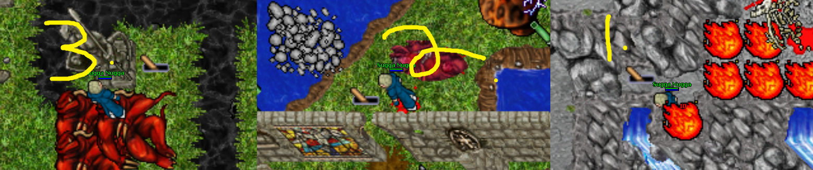

Draconian set to Fallen gods upgrade quest
Also known as: Fallen gods set quest
Recommended level: 700
Requirements:
This quest requires some time to clear all the creatures on the way, opening 3 levers and knowing where to go. If you are lower level, I recommend you to take it easy and not rush too much.
You can choose either one: go from Magician’s creek checkpoint (CP) by ship or Fallen gods checkpoint 1 from Sir Mystic Rick. I recommend you to go from Magician’s creek as it’s fastest way to do this.
From Magician’s creek CP go South and up the first stairs you see on your left. There’s some incans and mayans, get past them and find lever on the mountain. You’ll see unreachable xarptor on the other side aswell.
For the next lever, head South and find place where’s alot of Ashtars (looking like orc berserkers). Follow the path to the West side. You’ll come across 1 surphyre (watch for the pitfalls as there is no way back!) Go up the stairs and head North through the mountain and go down the first pitfall you see by the dark wizards. Go down with a single holy knight, and follow the path. Eventually you’ll find some giants and some doors. Open the left side doors to get through and kill wizard of visualis and pull the lever (Yellow circle). Here is also teleport to Lands of the Mysticon (Purple circle).
For the last lever, from this place head back where you killed the surphyre, to go back you need to find stairs hidden inside the mountain (picture) and go down one of the pitfalls. Go West with xarptors and single Xapter. The lever is right there. Then you can get through the walls in the middle of the Fallen gods.


Now follow the red path on the map to the center of Fallen gods and go downstairs. Head North and go downstairs behind the stairs (picture) and go full down. Then go East stairs down, follow the path to 8 teleports. Go into the right side middle teleport and follow the stairs leading up. Eventually you’ll find yourself at the bridge with wizard of visualis, kill it and follow the path again and find Canopus doradus. Go through the teleporter, keep on going forward. Hiit 2 switches on both sides (hypergiant, suprhyre and Andromeda draconis) to be able to pull the last switch up North. Now you can exchange your old armors to gain Fallen gods set.